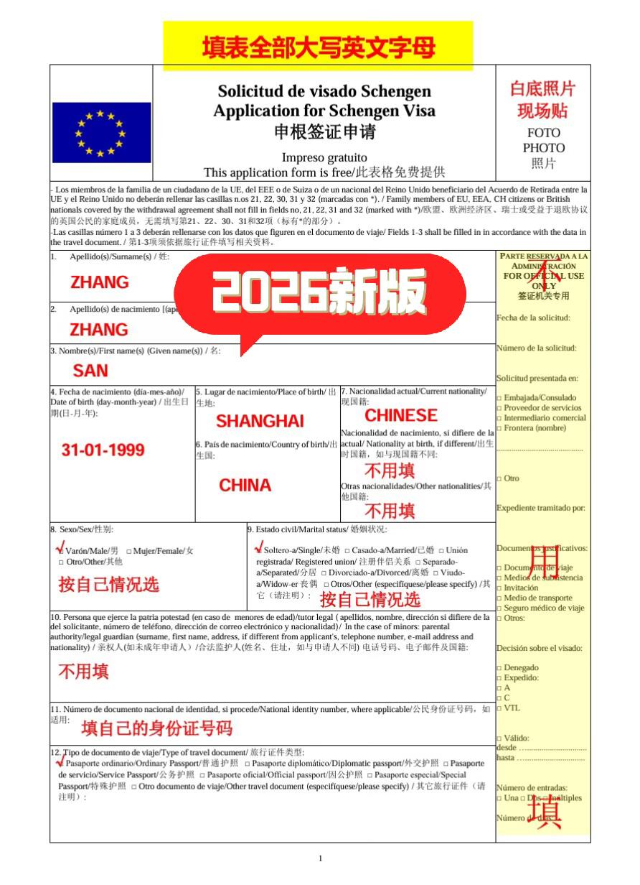
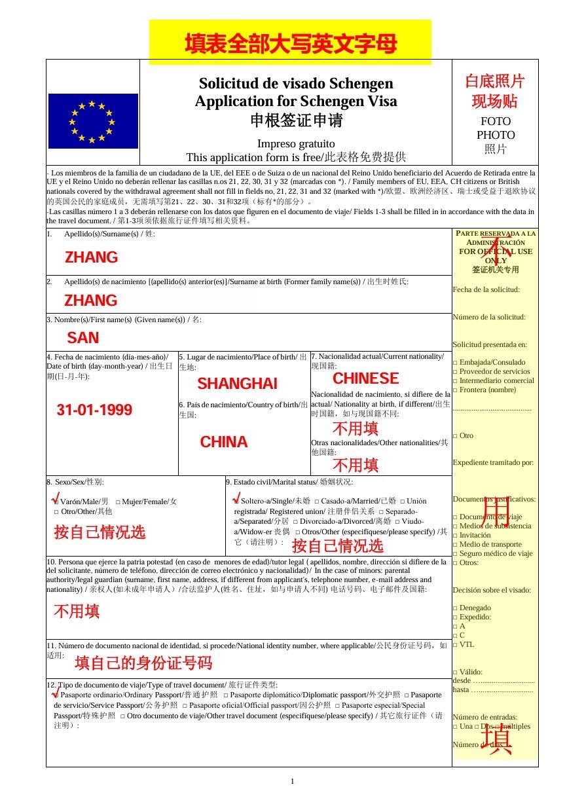
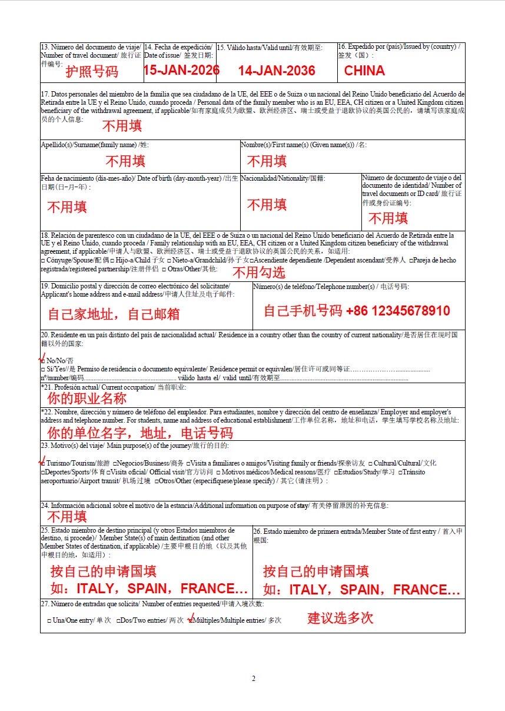
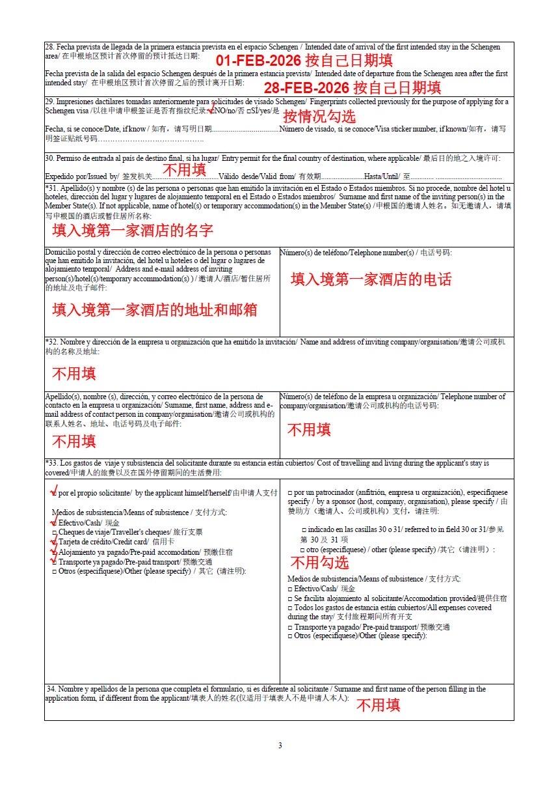
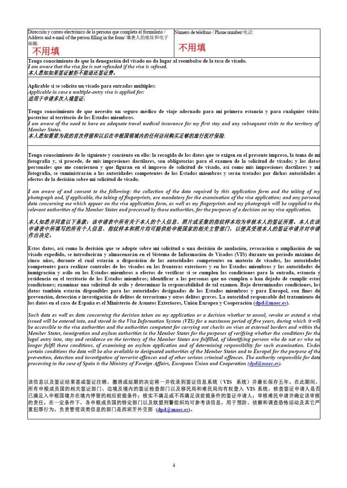
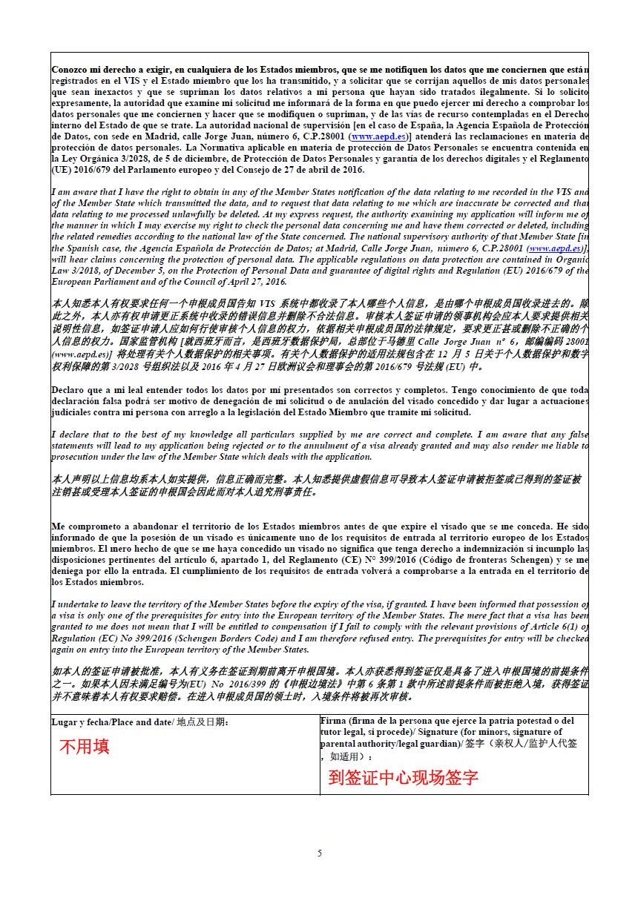

两个人的西班牙之梦 · 2026 国庆
在职人员 + 配偶随行 · 2026 年十一出行 · 上海 BLS 签证中心递签
2026 年 10 月 1 日出发 → 倒推每个时间节点该做什么
准备材料 + 办结婚公证
在线填表 + 抢预约号
递签 + 录指纹（两人）
等待出签 + 查进度
签到手 → 买机票订酒店
出发！🇪🇸
- 整理护照、身份证、户口本
- 找公司开中英文在职证明 + 营业执照副本（盖章）
- 打印近 3–6 个月工资卡银行流水
- 去公证处办结婚公证 + 单认证（需 2–3 周）
- 买旅行保险（电子保单彩色打印）
- 订可免费取消的酒店（Booking）
- 用穷游助手做英文行程单
- 在携程/飞猪出未付款的机票预订单
- 在西班牙外交部网站填写申请表并打印
- 每天刷 BLS 网站抢号（建议早上 8–9 点）
- 两人预约同一天相邻时段
- 打印预约确认单
- 本人到上海 BLS 签证中心交材料
- 录指纹（10 指）+ 现场拍照
- 缴费（约 ¥800/人）
- 领回执单，用于查询进度
- 官方 15 个自然日，高峰期可能 20–30 天
- 用回执单上的号码在 BLS 网站查进度
- 保持手机畅通（可能有电话调查）
- 出签后可选自取或快递到家（¥60/本）
- 购买正式机票（此时价格可能上涨，但有签证保障）
- 把免费取消的酒店换成更心仪的
- 预订圣家堂门票（提前 1–2 个月！）
- 预订高铁 AVE 票（提前购票折扣大）
- 买欧洲电话卡 + 换欧元现金
上海 → 巴塞罗那，开启西班牙之旅 🇪🇸
| 签证类型 | 短期申根签证（C 类）· 旅游 |
| 受理领区 | 上海领区（上海市、江苏省、浙江省、安徽省、江西省） |
| 签证中心 | BLS 西班牙签证中心 · 上海 📍 黄浦区四川中路 213 号 久事商务大厦 3 层 🚇 地铁 2/10 号线 南京东路站 2 号口 🕐 周一至周五 8:00–15:00（需提前预约） |
| 费用（两人） | 签证费 €90/人（约 ¥700） + BLS 服务费约 ¥120/人 + 快递费 ¥60/本（可选） ≈ 合计 ¥1,600–2,000 |
| 审理时间 | 官方 15 个自然日，高峰期 20–30 天 |
| 指纹 | 首次申根需本人到场录 10 指指纹（59 个月内有效） |
| # | 材料 | 详细要求 | 谁准备 |
|---|---|---|---|
| 1 | 护照 | 有效期 > 回国日期 + 3 个月（即 2027 年 1 月后），至少 2 页空白签证页。整本复印（含空白页）。如有旧护照一并提供。 | 两人 |
| 2 | 签证申请表 | 在西班牙外交部官网 sutramiteconsular.maec.es 在线填写，用英文大写字母填写。打印后最后一页签名（中英文签名均可）。 |
两人 |
| 3 | 白底彩照 ×2 | 35mm × 45mm，6 个月内近照，白底、露双耳、不戴眼镜、不露齿。背面用铅笔写名字（不要用签字笔会蹭花）。 | 两人 |
| 4 | 身份证复印件 | 正反面复印在同一张 A4 纸上。 | 两人 |
| 5 | 户口本复印件 | 整本复印（所有信息页，含空白页），原件带过去核验。 | 两人 |
| 6 | 结婚证复印件 | 两人结婚证各复印一份。 | 两人 |
| 7 | 结婚公证书 | 到涉外公证处办结婚公证（中英文/中西文），再到外事办做单认证。详见下方「结婚公证办理」。 | 配偶材料 |
| 8 | 在职证明 | 中英文双语，公司抬头纸打印 + 公章 + 领导签字。内容：姓名、护照号、职位、月薪、入职日期、准假日期、费用承担方、保证回国。 | 你 |
| 9 | 营业执照副本复印件 | 加盖公司公章，注意公章要清晰可读。 | 你 |
| 10 | 银行流水 | 近 3–6 个月工资卡流水，银行柜台打印中英文双语版 + 盖章。余额建议 ≥ 5 万/人。两人共用一份流水也可以，余额建议 ≥ 8 万。 | 你为主 |
| 11 | 出资声明信 | 由你（在职方）手写或打印签名，声明承担媳妇全部旅行费用。英文或中英文双语。模板见下方。 | 你 → 配偶 |
| 12 | 行程单 | 英文版，每日安排：日期·城市·景点·交通·住宿。建议用穷游「行程助手」App 生成，导出为英文版。 | 两人 |
| 13 | 机票预订 | 携程/飞猪可出未付款的预订确认单（英文版），或订可全额退款的机票。注意姓名拼写要和护照一致。 | 两人 |
| 14 | 酒店预订 | Booking 订可免费取消的酒店，覆盖全部住宿天数，预订单要显示所有入住人姓名。 | 两人 |
| 15 | 旅行保险 | 保额 ≥ 3 万欧元（≈ ¥24 万），覆盖全程申根区天数。支付宝搜「申根保险」可买。彩色打印保单。 | 两人 |
| 16 | 房产证/车辆登记证 | 非必需但加分。复印即可，原件带去核验。 | 你 |
放在公司抬头纸上打印，中英文各一份或中英文双语合并。
根据小红书攻略「🇪🇸西班牙申根签证表DIY必备填写模板📑」整理。核心原则：全程大写英文/西班牙文填写、A4 打印、本人签名与护照签名一致。页面下方已保存原图模板，方便照着核对。
| 项目 | 填写 / 准备要求 |
|---|---|
| 签名与日期 | 签名栏手写中文签名，必须与护照签名一致；日期填写递交申请当天日期。未成年人需监护人签名。 |
| 照片 | 2 张 6 个月内白底彩照，3.5 × 4.5 cm。现场粘贴建议用双面胶，不要用订书机。 |
| 材料配套 | 申请表 1 份、照片 2 张、有效护照及全本复印件、往返机票预订单、全程酒店预订单、3 万欧元保额旅行保险、近 6 个月银行流水。 |
| 预约时间 | 建议提前 2–3 个月预约递签，旺季预留更长时间；首次申请需本人到场采集指纹，指纹一般 59 个月内有效。 |






来源参考：小红书用户「西示风」笔记《🇪🇸西班牙申根签证表DIY必备填写模板📑》。图片用于个人申请准备时核对字段，不替代 BLS / 西班牙领馆最新官方要求。
📍 黄浦区四川中路 213 号 久事商务大厦 3 层
⏱ 全程约 1–2 小时（视当天人数而定）
配偶随行时，西班牙领事馆要求提供结婚公证书（中英文）+ 外交部单认证。建议提前 3–4 周办理。
地点：上海市东方公证处
（静安区凤阳路 598 号）
或其他有涉外公证资格的公证处
材料：双方身份证 + 户口本 + 结婚证原件
费用：约 ¥200–300
时间：5–7 个工作日（可加急 2–3 天）
要求：办理中英文结婚公证书
地点：上海市外事办
（静安区华山路 228 号）
材料：公证书原件
费用：约 ¥50–100
时间：约 5 个工作日
说明：单认证 = 外交部领事司对公证书上公证员签章的认证，西班牙领馆认可
| 要求 | 说明 |
|---|---|
| 时间 | 近 3–6 个月，递签前 1–2 周内去银行打印 |
| 类型 | 工资卡流水最佳——有稳定的工资入账记录，比储蓄卡更有说服力 |
| 余额 | 单人建议 ≥ 3–5 万，两人 ≥ 5–8 万。不用太多，能覆盖旅行花费即可 |
| 打印 | 银行柜台打印中英文双语版 + 盖银行业务章。自助机也可以但双语更保险 |
| ⚠️ 大忌 | 不要递签前突然大额存入！签证官会怀疑是借款。如果余额不够，提前 1–2 个月陆续存入 |
| 辅助材料 | 房产证、车辆登记证、定期存款单、理财证明——都是加分项，复印附上 |
申根签证强制性要求：保额 ≥ €30,000，覆盖「整个申根区 + 全程天数」。建议买比行程多 1–2 天。
| 产品 | 价格 | 推荐理由 |
|---|---|---|
| 安联「申根之王」 | ¥100–300 | 出单最快，申根签专用，支付宝搜得到 |
| 平安境外旅行险 | ¥80–200 | 大品牌，理赔方便，覆盖全面 |
| 美亚「万国游踪」 | ¥120–350 | 老牌好评，保障条款详细 |
| 京东安联申根险 | ¥90–250 | 性价比高，该有的都有 |
💡 支付宝直接搜索「申根保险」即可购买和打印保单。记得选彩色打印随材料递交。
| 项目 | 单价 | 两人合计 |
|---|---|---|
| 申根签证费 | €90（约 ¥700） | ¥1,400 |
| BLS 服务费 | 约 ¥120 | ¥240 |
| 快递费（可选） | ¥60/本 | ¥120 |
| 结婚公证 + 单认证 | — | ¥250–400 |
| 旅行保险 | ¥100–300 | ¥200–600 |
| 照片（如需现场拍） | ¥35 | ¥70 |
| 复印/打印 | 若干 | ¥50 |
| 总计 | ¥2,300–2,900 |
圣家堂完工之年，感受高迪的梦幻世界；再去马德里，体验西班牙双城记。
上海 ✈️ 巴塞罗那（3晚） 🚄 马德里（3晚） ✈️ 上海
圣家堂是全世界最热门的景点之一，必须提前 1–2 个月在线购票。建议选 9:00 最早入场 + 登塔 (Passion Tower) 的组合票，光线最佳且人少。官网：sagradafamilia.org
另外推荐预订 巴特罗之家夜场（蓝色 LED 灯光秀），以及 古埃尔公园 门票也要提前购买，每天限流。
从 Tapas 到海鲜饭，从吉拿果到桑格利亚——每一口都是西班牙的热情。
发源地瓦伦西亚最正宗，但巴塞罗那港口区也能找到一流版本。两人分享一锅，配白葡萄酒 🥂
Jamón Ibérico de Bellota——黑标橡果火腿，入口即化。马德里 Museo del Jamón 是性价比之选。
马德里 San Ginés —— 1884 年开业的老店，24 小时营业。热油炸面团蘸浓巧克力，甜蜜到心底。
红葡萄酒 + 水果 + 气泡水，最适合两人小酌。Catalana 区的 Cava 起泡酒也值得一试。
西班牙的饮食文化——每餐换不同小店，点几份小菜配一杯酒。推荐：Patatas Bravas、Gambas al Ajillo、Croquetas
番茄底的冷汤，10 月初西班牙还热，喝一碗清爽开胃。配火腿和面包就是完美一餐。
十一期间为旺季，价格上浮约 20–30%，以下按旺季估算。
出发前看一眼，落地不慌。
| 城市 | 白天 | 早晚 | 建议 |
|---|---|---|---|
| 巴塞罗那 | 22–24°C ☀️ | 15–17°C | 白天短袖/裙子，薄外套备用 |
| 马德里 | 20–23°C ☀️ | 10–13°C | 昼夜温差大，需夹克/毛衣 |
👗 情侣穿搭建议：宽松舒适为主，一双好走的鞋子最重要！女生可以带一条红色/碎花连衣裙，在西班牙广场拍照超好看。
城际：高铁 AVE — 巴塞罗那→马德里 2.5h，提前在 Renfe 官网购票有折扣。
市内交通：
西班牙整体治安良好，但巴塞罗那和马德里的小偷问题比较突出。几个要点：
跟着清单一步步准备，不会漏掉任何关键事项。